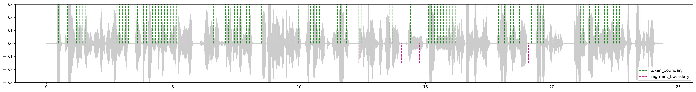
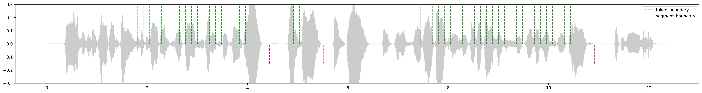
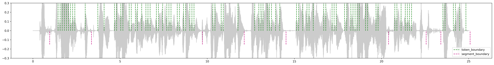
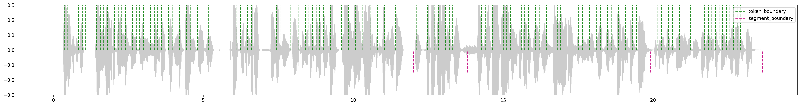
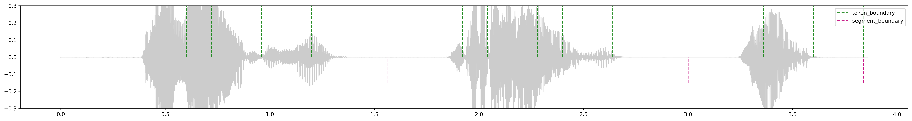
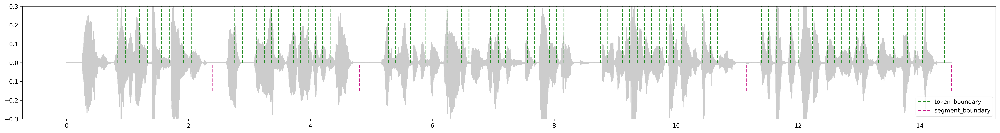
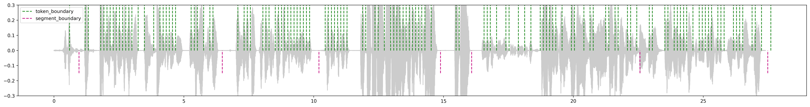
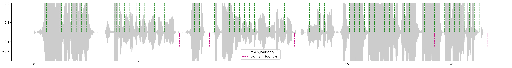

A CIF-based Speech Segmentation Method for Streaming E2E ASR
*Corresponding author.
We propose a Continuous Integrate-and-Fire (CIF)-based speech segmentation method for two-pass streaming E2E ASR. Compared with VAD, the CIF estimator reuses the large encoder of ASR and optimizes jointly with ASR, which has a stronger modeling ability. In addition, the CIF participates in the generation of token embedding in Paraformer, so the weight can also reflect the decoder's dependence on acoustic information contained in each frame. Continuous zero appearing in the CIF weight will be segmented. Furthermore, convolutional processing is adopted to detect the middle of the silent segment.
Here are some cases of real audio segmentation. In the figure, the gray background is the waveform of the audio, and the region where the waveform tends to the horizontal line represents the silence. The green dotted lines are the token boundaries predicted by CIF, and the red dotted lines represent the segment boundaries cut by the CIF-frame-300ms segmenter. We use '//' in the text to mark the segment boundaries.
嗯//就咱们两个之间相互重叠的话送到我们识别里面的//是两个纯的一个//单单声道的

对呃我们可以先第一个话题可以围绕就是说呃正好就是结合我们今天这个环境啊//嗯嗯庭庭子那边就是呃我也想了解一下后面我们想做一些语料的//一些测试的时候//我也跟//嗯翻译团队人那边了解到他们跟钉钉做的时候呢是说可以去//为了保证安全性//可以把我们录音的内容做一些切断
那就尚男开始侃侃而谈//你对我们这场测试或今天的天气//或者即将到来的元旦的//随便聊聊你的想法

从哪个时间点到哪个时间点然后我们这一次送标//然后//给到给就是送标多少条数据或多少小时数据然后我们去抓//就可以了
Noise//那就你了下一个是我吗//啊啊我我是王宇然后达摩院这边的然后我当前是处于在家的环境//然后四周有//有装修的立体声环绕//然后我这边是电脑客户端苹果电脑客户端接入然后//用的是蓝牙耳机//对呀我看了
没问题周欣那我们聊一个第二个话题啊尽量让我们的一个沟通的话语不要太//过多的切断嗯那从呃庭庭子那边来看的话像首先我们今天去测试的//唉我打断一下哈我记得//阿里郎这边是可以起三路的好像是可以同时三个人讲话//它是起了三路识别所以说我们打断是没有问题的
现在有存吗//现在有存吗有//有
啊其实都是打散的//就是就是我们今天的这个会//假设说去送标的话如果是混到那个我们整个阿里郎那个大池子里面//就是都不见得会有那么一两句能送过去
现在的话我在我今天在深圳的时候我的那个朋友现在在创业嘛//创业的时候就是专门给这些深圳有好多ai的公司//想去做标注的说

OK//那要不庭庭子再跟我们介绍一下呃把我们这个音频呃现在要送到//呃那边去做标注的话大概是怎样一个流程呢//可以跟我们普及一下哦做标注因为咱们阿里郎是有个APP KEY嘛//然后//你稍等哈我回看一下哈我们有个APP KEY 然后呢我们现在的话都是从就是//其他业务上来讲就可能从这APP KEY我们去选一下
能是无限路呢可能还是有限制的啊可能资源也是有限//哦对那个刚才辛吉说这边好像它的最大容量也是有限的

就是标注公司那块可能就是//人员上面都会有问题

尚男还在跟周欣的一个会议室吗//在但是我把他的那个麦克风给关掉了//OKOK//好嗯因为因为我这边设备太多了移到工位上//嗯设备太多了唉要不这个怎么样昨天你来隔壁这个会议室我去工位然后让尚南//在那个环境里面也说一些话
